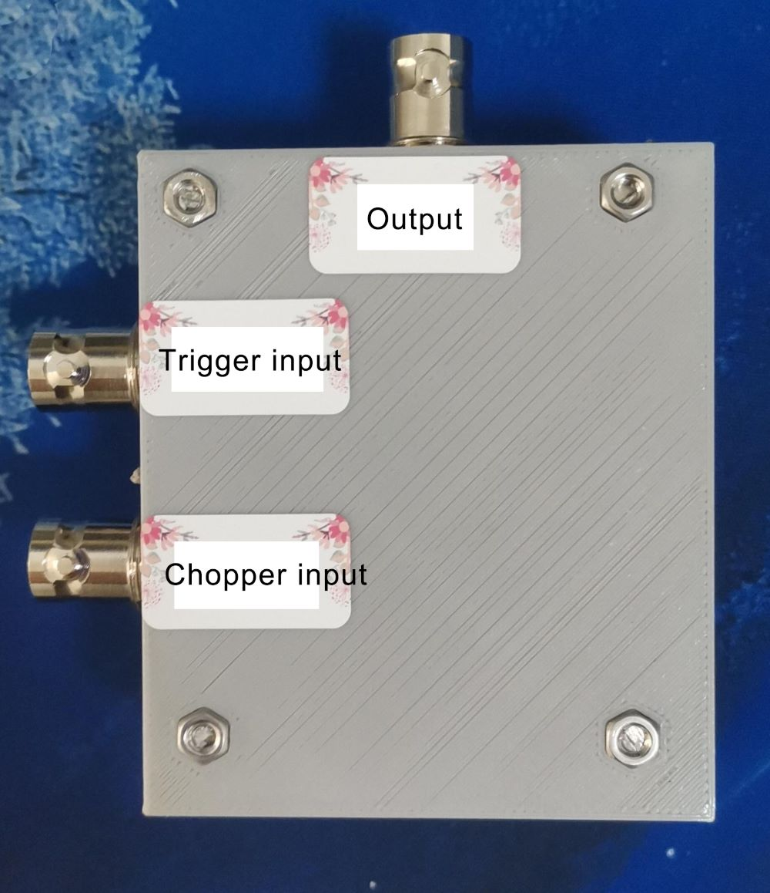
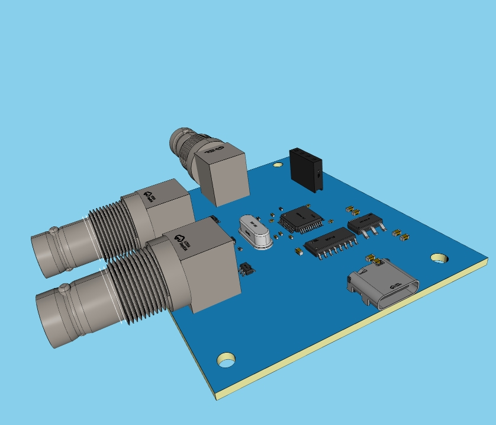
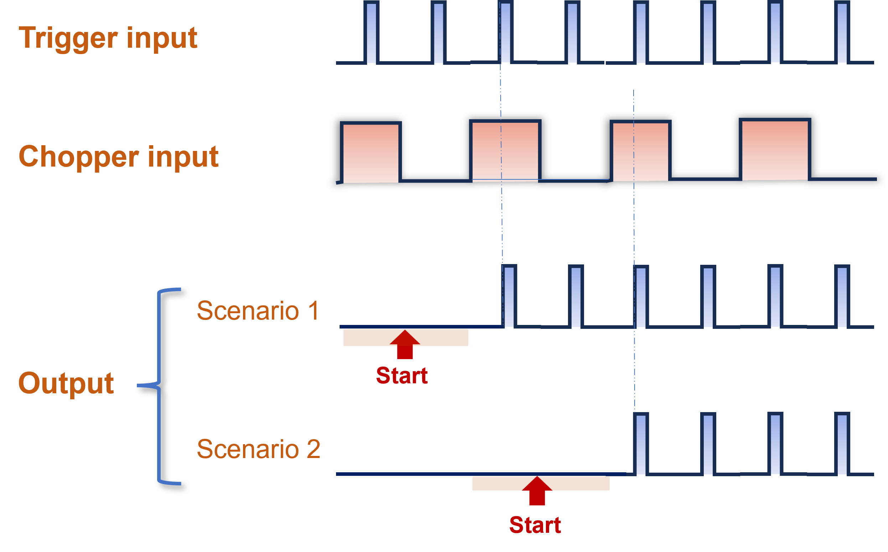
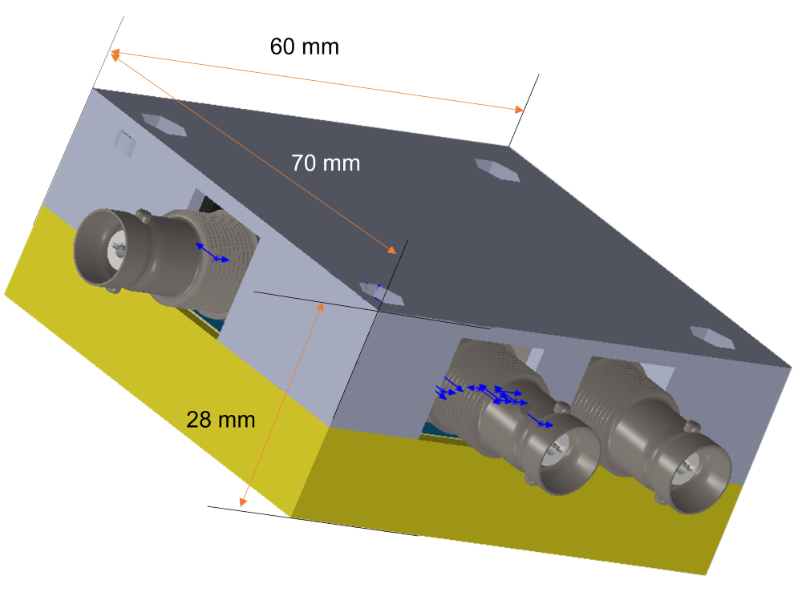

PulsearSpec
menu




Identify pump-on and pump-off shots in every pump-probe acquisition.
The Phase Lock Device is engineered to deliver precise output based on the status of the input trigger signal and the chopper input signal. This device is primarily used in transient absorption experiments, where by connecting the output signal to a spectrometer, each data acquisition starts with a pulse containing the pump light, thereby achieving the goal of locking the positive and negative phases of the transient absorption. This device features a Type-C port, used for power supply and connecting to a PC, enabling control through the LabVIEW software via this connection. The specially designed circuit board is optimized for high-speed processing. This allows for real-time signal processing with an impressively low delay of less than 20 ns between the input and output triggers. Its low-power design also keeps heat generation to a minimum.

Phase lock device input and output
The Phase Lock Device is well suited for transient absorption spectroscopy and experiments employing pump-probe techniques, including 2D Electronic Spectroscopy (2D ES), Transient Absorption Imaging (TAM). It reliably distinguishes between probe spectra in the presence or absence of pump pulses. Additionally, we offer a LabVIEW subVI for straightforward integration with your existing LabVIEW control software, making it easy to add to existing setups.


Example application in transient absorption experiments
| Name | Description |
|---|---|
| Communication Port | Type-C Port for Power and Control |
| Trigger Signal Delay | ≤ 20 ns |
| Max. Laser Repetition Rate | ≤ 200 kHz |
| PC Response Time | ~ 3 ms |
| BNC Input Voltage Range | 2 ~ 5 V |
| BNC Output Voltage | 5 V |
| Control software | LabVIEW 2012 and above (Download) |
